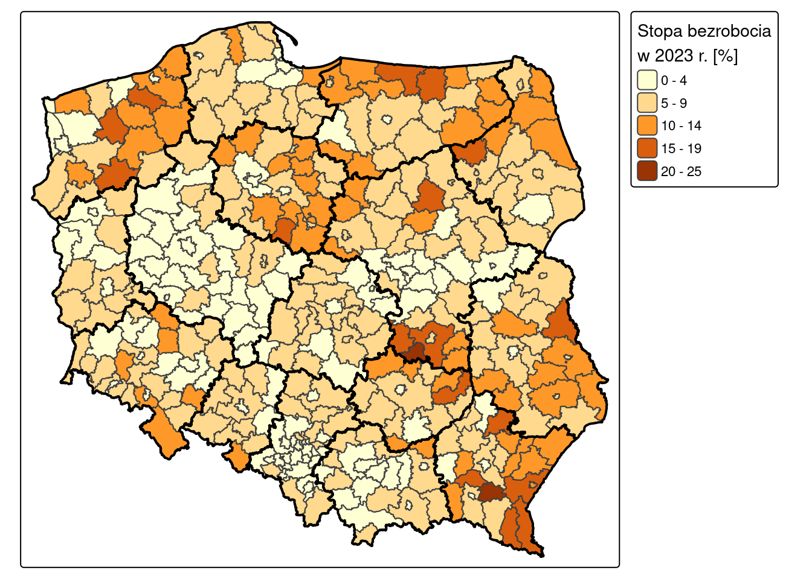
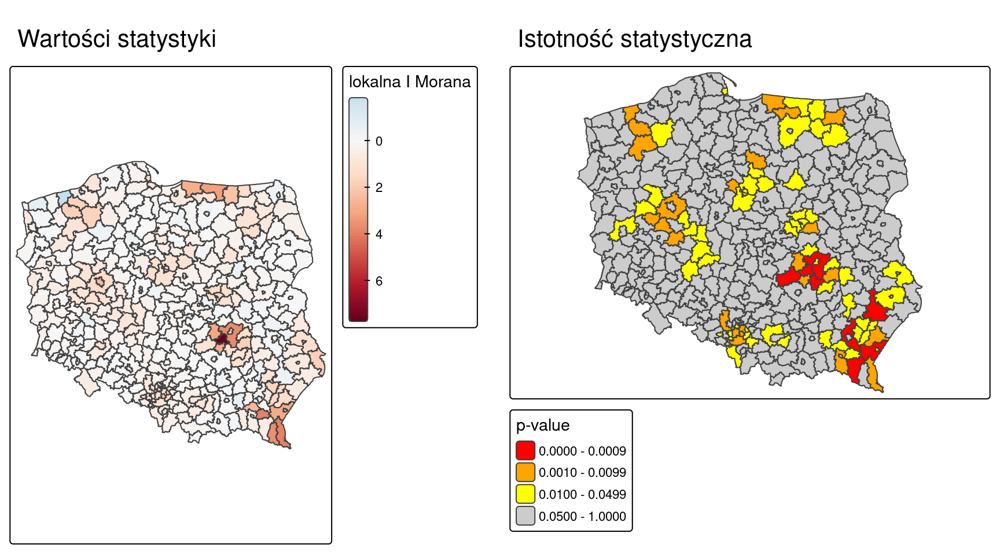
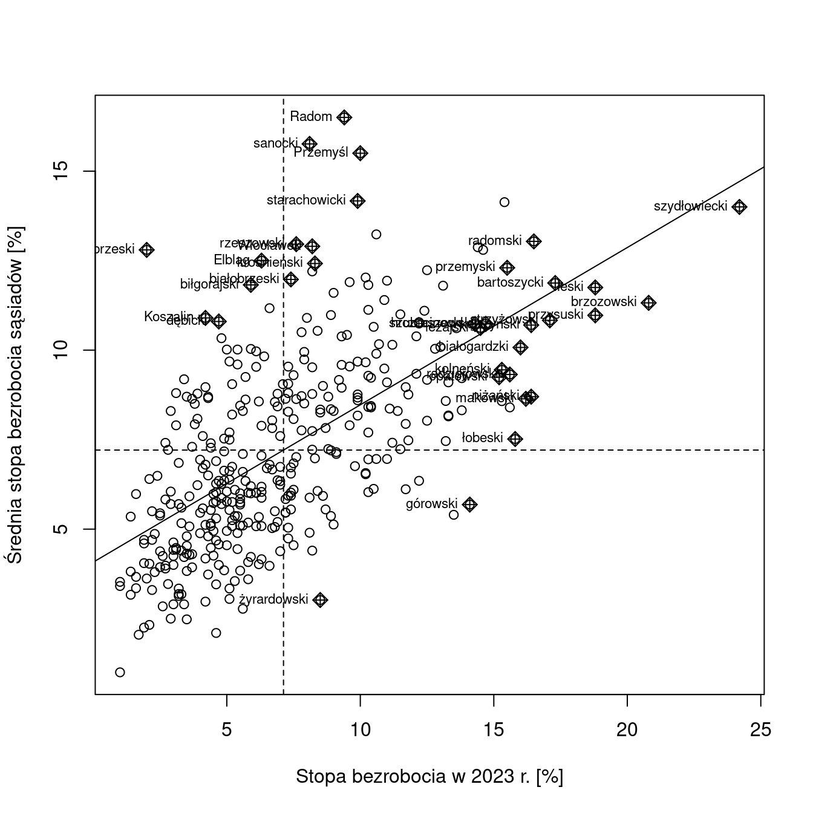
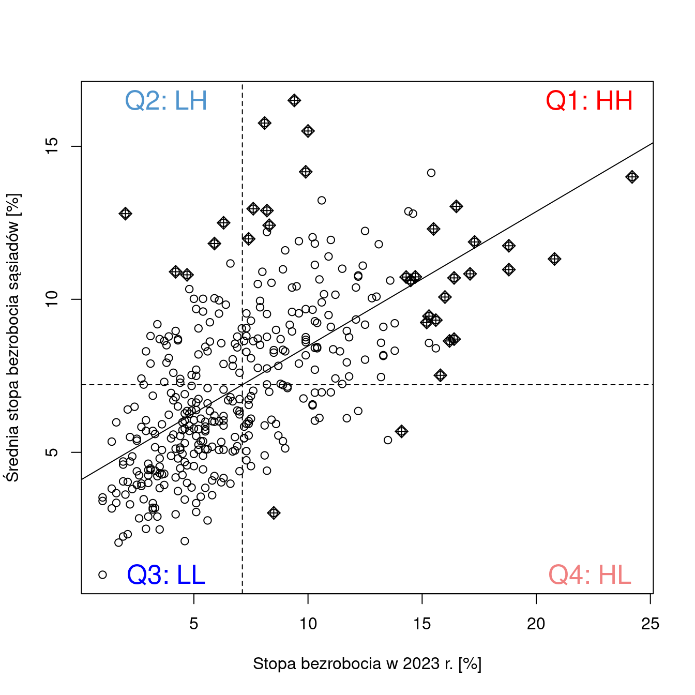
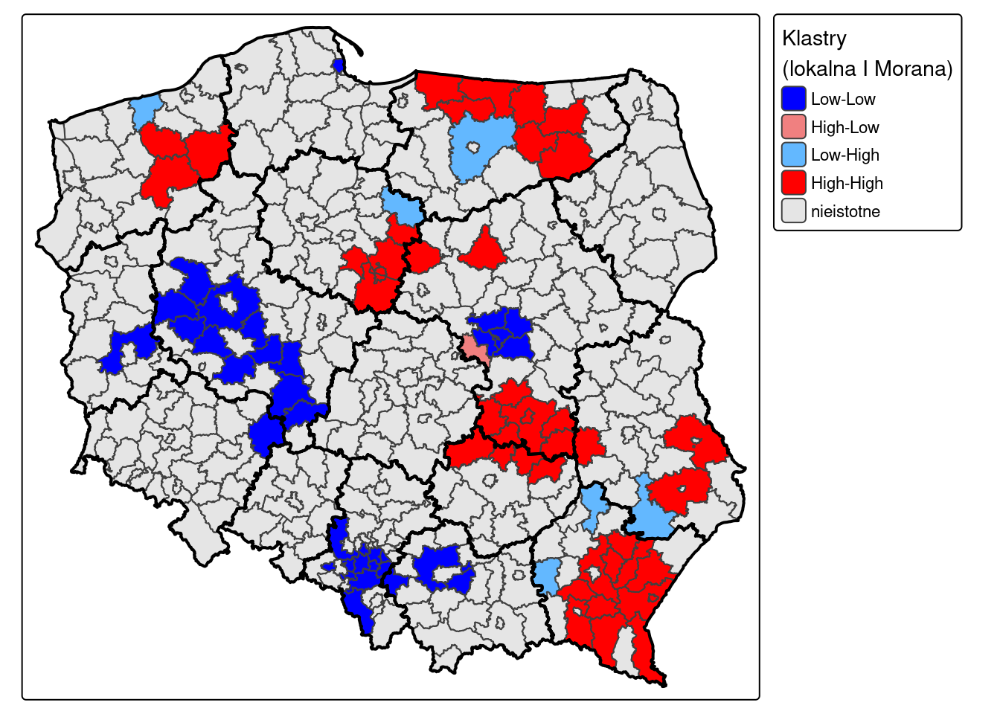
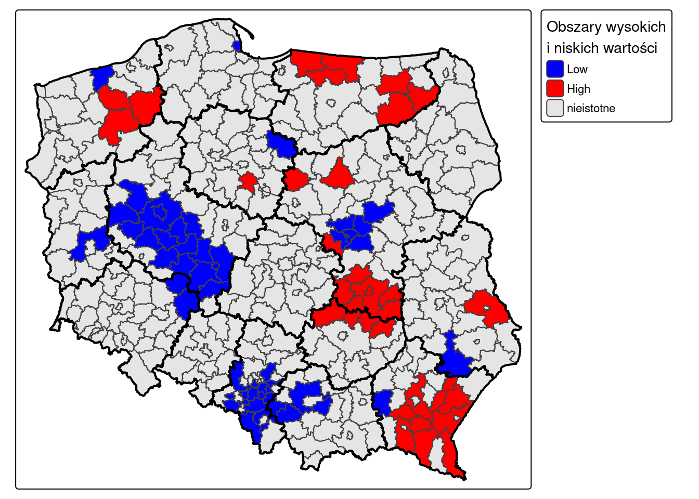
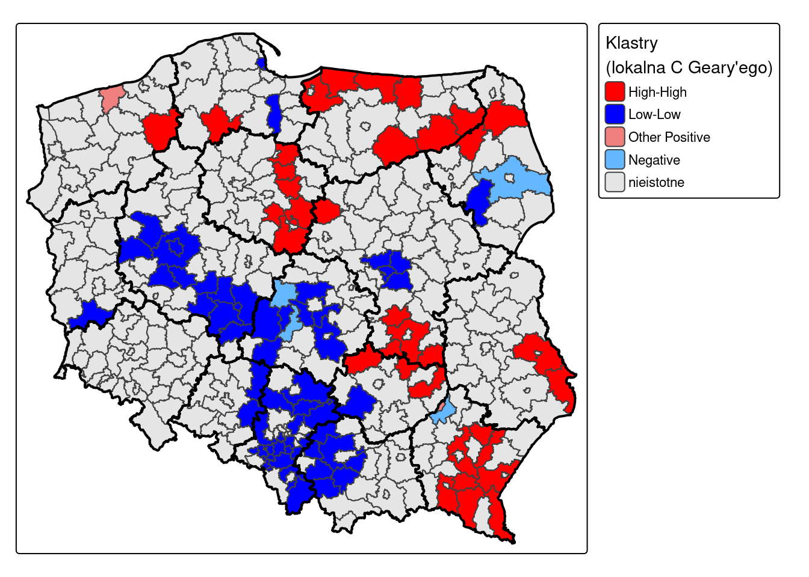

library(sf)
library(tmap)
library(spdep)
library(dplyr)7 Miary autokorelacji danych obszarowych
Czego się nauczysz
Po tym rozdziale potrafisz wykonać w R:
- zbudować listę sąsiadów i macierz wag przestrzennych (
poly2nb(),nb2listw()), - obliczyć globalne miary autokorelacji: I Morana, C Geary’ego i G Getisa & Orda, w wariancie asymptotycznym i opartym na symulacji,
- sporządzić wykres rozrzutu Morana,
- obliczyć lokalną statystykę I Morana i wydzielić na jej podstawie klastry (
localmoran(),hotspot()), - wskazać obszary wysokich i niskich wartości lokalną statystyką G Getisa & Orda (
localG_perm()), - zapisać wyniki analizy do pliku.
Rozumiesz i umiesz zinterpretować:
- co oznacza znak i wielkość statystyki I Morana oraz C Geary’ego,
- różnicę między testem asymptotycznym a testem opartym na symulacji Monte Carlo,
- dlaczego G Getisa & Orda nie wykrywa autokorelacji ujemnej,
- cztery ćwiartki wykresu rozrzutu Morana i odpowiadające im typy klastrów,
- dlaczego klastry wydziela się wyłącznie z wartości istotnych statystycznie,
- wynik lokalnej statystyki C Geary’ego (
localC_perm()) — czytasz go, nie liczysz samodzielnie, - od czego zależy powtarzalność wyniku procedur opartych na permutacjach.
Teoria: Najważniejsze informacje. Funkcje: Załącznik B. Słownik pojęć: Załącznik D.
7.1 Wprowadzenie
Dane obszarowe opisują wartość zagregowaną w jednostce przestrzennej: stopę bezrobocia w powiecie, frekwencję wyborczą w gminie, liczbę ludności w obszarze spisowym. Pytanie, które zadajemy tym danym w tym rozdziale, brzmi: czy jednostki sąsiadujące ze sobą mają wartości podobne, czy różne — i czy odnotowane podobieństwo jest większe, niż wynikałoby z przypadku.
Odpowiadamy na nie w dwóch skalach. Miary globalne sprowadzają cały zbiór do jednej liczby i rozstrzygają, czy wzorzec przestrzenny w ogóle istnieje. Miary lokalne liczone są osobno dla każdej jednostki i wskazują, gdzie leżą zgrupowania podobnych wartości oraz jednostki odstające od swojego otoczenia. Obie grupy są potrzebne: miara globalna bliska zeru nie wyklucza istnienia lokalnych klastrów, które wzajemnie się znoszą.
Trzy pytania pokrewne należą gdzie indziej:
- Dlaczego wzorzec powstał — do modelowania przestrzennego, które wykracza poza ten przedmiot. Autokorelacja jest własnością rozkładu wartości w przestrzeni; wskazanie przyczyn wymaga odniesienia zmiennej do innych zmiennych.
- Jak wynik zmienia się wraz z podziałem na jednostki — do problemu zmiennych jednostek odniesienia (ang. modifiable areal unit problem, MAUP), opisanego w rozdziale teoretycznym części. Ta sama zmienna agregowana do gmin i do powiatów daje różne wartości miar autokorelacji; w rozdziale pracujemy na jednym, ustalonym podziale.
- Jak wybrać definicję sąsiedztwa — do rozdziału teoretycznego części, który opisuje pozostałe kryteria: odległość i k najbliższych sąsiadów. Przyjmujemy regułę queen, bo tak zbudowane są dane.
7.2 Struktura obiektów: lista sąsiadów i macierz wag
Wszystkie miary tego rozdziału wymagają wcześniejszego zapisania informacji o tym, które jednostki ze sobą sąsiadują. Pakiet spdep używa do tego dwóch klas obiektów.
Obiekt klasy nb (ang. neighbour list) to lista o tylu elementach, ile jest jednostek. Element i zawiera numery wierszy jednostek sąsiadujących z jednostką i. Jest to wyłącznie informacja o sąsiedztwie: sąsiad albo jest, albo go nie ma.
Obiekt klasy listw (ang. weights list) to lista sąsiadów uzupełniona o wagi przypisane każdej parze sąsiadów. Dopiero on wchodzi do funkcji liczących statystyki. Sposób nadania wag określa argument style:
style |
Wagi | Kiedy używamy |
|---|---|---|
"W" |
standaryzowane wierszami — wagi w każdym wierszu sumują się do 1 | domyślny wybór dla I Morana i C Geary’ego |
"B" |
binarne — 1 dla sąsiada, 0 dla pozostałych | wymagane przez globalG.test() |
Przy standaryzacji wierszami jednostka mająca 7 sąsiadów przypisuje każdemu z nich wagę 1/7, a jednostka mająca 2 sąsiadów — po 1/2. Wartość sąsiada znaczy więc tym więcej, im mniej sąsiadów ma dana jednostka.
Ważna konsekwencja praktyczna: obiekty nb i listw odwołują się do jednostek przez numer wiersza, a nie przez identyfikator. Zmiana kolejności wierszy albo usunięcie choćby jednego wiersza po zbudowaniu listy sąsiadów unieważnia ją. Listę sąsiadów budujemy zawsze na tym obiekcie, na którym liczymy statystyki.
7.3 Miary autokorelacji przestrzennej w R
| Miara | Funkcja | Wagi | Wynik |
|---|---|---|---|
| I Morana — test asymptotyczny | moran.test() |
"W" |
deterministyczny |
| I Morana — test Monte Carlo | moran.mc() |
"W" |
losowy (zależy od nsim i ziarna) |
| C Geary’ego — test asymptotyczny | geary.test() |
"W" |
deterministyczny |
| C Geary’ego — test Monte Carlo | geary.mc() |
"W" |
losowy |
| G Getisa & Orda — globalna | globalG.test() |
"B" |
deterministyczny |
| wykres rozrzutu Morana | moran.plot() |
"W" |
deterministyczny |
| lokalna I Morana | localmoran() |
"W" |
deterministyczny |
| lokalna C Geary’ego | localC_perm() |
"W" |
losowy |
| lokalna G Getisa & Orda | localG_perm() |
"W" |
losowy |
| klasyfikacja klastrów | hotspot() |
— | dziedziczy po statystyce |
Pełne zestawienie funkcji — Załącznik B.
Funkcje moran.mc() i geary.mc() losują przy każdym wywołaniu, a wyniku nie da się odtworzyć bez ustawienia ziarna generatora liczb losowych. Ustawiamy je raz, na początku rozdziału.
set.seed(1111)Funkcje localC_perm() i localG_perm() mają własny argument iseed, niezależny od set.seed() — podajemy go przy każdym wywołaniu.
7.4 Przykład: stopa bezrobocia w powiatach w 2023 roku
Dane pochodzą z Banku Danych Lokalnych GUS.
data/bezrobocie_pl.csv— identyfikator powiatu (Kod), nazwa i stopa bezrobocia rejestrowanego w latach 2004, 2010, 2021 i 2023 (kolumnySB2004,SB2010,SB2021,SB2023),data/powiaty_pl.gpkg— granice 380 powiatów,data/wojewodztwa.gpkg— granice województw; używane wyłącznie jako tło map.
Kroki analizy
- Wczytanie i złączenie danych, mapa zmiennej —
read.csv(),read_sf(),left_join(). - Macierz wag przestrzennych —
poly2nb(),nb2listw(). - Miary globalne —
moran.test(),moran.mc(),geary.test(),geary.mc(),globalG.test(). - Lokalna statystyka I Morana —
localmoran(). - Klastry —
hotspot(). - Obszary wysokich i niskich wartości —
localG_perm(). - Zapis wyników —
write_sf().
Kod spoza tych siedmiu kroków jest objaśnieniem: nie trzeba go uruchamiać, żeby wykonać analizę.
Krok 1: dane
bezrobocie = read.csv("data/bezrobocie_pl.csv", sep = ";", dec = ".")
powiaty_granica = read_sf("data/powiaty_pl.gpkg")
woj_granica = read_sf("data/wojewodztwa.gpkg")Kolumna TERYT w warstwie granic zawiera czterocyfrowy identyfikator powiatu zapisany jako tekst ("0201"), a kolumna Kod w pliku CSV — siedmiocyfrowy identyfikator zapisany jako liczba (201000). Żeby złączyć oba zbiory, dopisujemy do TERYT trzy zera i zamieniamy wynik na liczbę.
powiaty = powiaty_granica |>
mutate(Kod = as.integer(paste0(TERYT, "000"))) |>
select(Kod) |>
left_join(bezrobocie, by = "Kod")
powiatySimple feature collection with 380 features and 6 fields
Geometry type: MULTIPOLYGON
Dimension: XY
Bounding box: xmin: 171677.5 ymin: 133223.7 xmax: 861895.8 ymax: 775019.1
Projected CRS: ETRF2000-PL / CS92
# A tibble: 380 × 7
Kod geom Nazwa SB2004 SB2010 SB2021 SB2023
<int> <MULTIPOLYGON [m]> <chr> <dbl> <dbl> <dbl> <dbl>
1 201000 (((250582.5 412431, 250591.7 412394… bole… 25.3 14.9 5.1 2.8
2 202000 (((336552.6 331384.4, 336555.6 3313… dzie… 31.7 22.3 5.5 5.5
3 203000 (((292025.7 412185.2, 291923.9 4122… głog… 23.7 14.6 7.7 6.5
4 204000 (((339636.3 422599.6, 339676.3 4226… góro… 32.7 26.6 18.3 14.1
5 205000 (((303544.3 353195.3, 303547 353161… jawo… 30.7 23.6 10.8 9.9
6 261000 (((270808.2 344428.9, 270814.4 3444… Jele… 15.1 10.9 3.8 3.8
7 207000 (((277907.5 324307.4, 277931.5 3243… kami… 29.3 22.1 6.6 6.1
8 206000 (((277907.5 324307.4, 277896.5 3243… kark… 27.1 22.9 10.5 8.5
9 208000 (((319841.5 312824.6, 319845.7 3128… kłod… 32.9 24.7 12.5 11.7
10 262000 (((302527.4 369768.8, 302470 369776… Legn… 20.3 9.2 5.2 4.4
# ℹ 370 more rowsWypisany obiekt jest klasy sf. Nagłówek podaje kolejno: liczbę obiektów i liczbę pól atrybutowych (380 features and 6 fields), typ geometrii (MULTIPOLYGON — powiat może składać się z kilku rozłącznych wielokątów), wymiar (XY), zasięg przestrzenny (Bounding box) oraz układ współrzędnych — PUWG 1992, wypisywany przez R jako ETRF2000-PL / CS92; jest to układ odwzorowany, więc odległości są w metrach. Kolumna geom zachowuje się jak każda inna kolumna: pozostaje powiązana z wierszami przy złączeniu, filtrowaniu i sortowaniu.
left_join() zachowuje wszystkie wiersze warstwy granic, więc gdyby któryś powiat nie znalazł odpowiednika w pliku CSV, otrzymałby NA zamiast zniknąć bez ostrzeżenia.
tm_shape(powiaty) +
tm_polygons(fill = "SB2023",
fill.scale = tm_scale_intervals(values = "brewer.yl_or_br"),
fill.legend = tm_legend(title = "Stopa bezrobocia\nw 2023 r. [%]")) +
tm_shape(woj_granica) +
tm_borders(col = "black", lwd = 2)
Krok 2: macierz wag przestrzennych
Funkcja poly2nb() buduje listę sąsiadów na podstawie wspólnej granicy. Argument queen = TRUE oznacza regułę queen — sąsiadami są jednostki mające wspólny odcinek granicy lub choćby jeden wspólny punkt. Reguła rook (queen = FALSE) wymaga wspólnego odcinka.
nb_q = poly2nb(powiaty, queen = TRUE)
nb_qNeighbour list object:
Number of regions: 380
Number of nonzero links: 2006
Percentage nonzero weights: 1.389197
Average number of links: 5.278947 Wypis obiektu nb podaje: liczbę jednostek (Number of regions), łączną liczbę relacji sąsiedztwa (Number of nonzero links — każda para liczona dwukrotnie, raz z każdej strony), udział niezerowych komórek w pełnej macierzy 380 × 380 (Percentage nonzero weights) oraz średnią liczbę sąsiadów przypadającą na jednostkę (Average number of links). Dla powiatów w Polsce wynosi ona 5.28.
Pierwszy element listy zawiera numery wierszy sąsiadów pierwszego powiatu:
nb_q[[1]][1] 11 12 14 18 29 30 379powiaty$Nazwa[nb_q[[1]]][1] "legnicki" "lubański" "lwówecki" "polkowicki" "zgorzelecki"
[6] "złotoryjski" "żagański" Funkcja nb2listw() dodaje do listy sąsiadów wagi. Budujemy dwie macierze: standaryzowaną wierszami — do I Morana i C Geary’ego — oraz binarną, potrzebną do globalnej statystyki G Getisa & Orda.
lw = nb2listw(nb_q, style = "W")
lw_b = nb2listw(nb_q, style = "B")
lwCharacteristics of weights list object:
Neighbour list object:
Number of regions: 380
Number of nonzero links: 2006
Percentage nonzero weights: 1.389197
Average number of links: 5.278947
Weights style: W
Weights constants summary:
n nn S0 S1 S2
W 380 144400 380 169.7589 1632.39Wypis obiektu listw powtarza charakterystykę listy sąsiadów, a poniżej podaje przyjęty styl wag (Weights style: W) i stałe macierzy wag używane we wzorach testów: n — liczba jednostek, S0 — suma wszystkich wag (przy standaryzacji wierszami równa liczbie jednostek), S1 i S2 — sumy pomocnicze wchodzące do wzoru na wariancję statystyki.
Pierwszy powiat ma 7 sąsiadów, więc po standaryzacji każdy z nich otrzymuje wagę 0.1429:
lw$weights[[1]][1] 0.1428571 0.1428571 0.1428571 0.1428571 0.1428571 0.1428571 0.1428571Krok 3: miary globalne
I Morana. Test asymptotyczny wymaga podania wektora wartości i macierzy wag. Hipoteza zerowa to brak autokorelacji przestrzennej.
moran.test(powiaty$SB2023, listw = lw)
Moran I test under randomisation
data: powiaty$SB2023
weights: lw
Moran I statistic standard deviate = 12.997, p-value < 2.2e-16
alternative hypothesis: greater
sample estimates:
Moran I statistic Expectation Variance
0.439401477 -0.002638522 0.001156697 Test asymptotyczny opiera się na założeniu o rozkładzie statystyki. Test oparty na symulacji Monte Carlo tego założenia nie wymaga: w każdej z nsim symulacji wartości zmiennej są losowo przypisywane do jednostek, statystyka liczona jest ponownie, a wynik obserwowany porównywany z rozkładem wartości uzyskanych przy losowym rozmieszczeniu.
moran_mc = moran.mc(powiaty$SB2023, listw = lw, nsim = 999)
moran_mc
Monte-Carlo simulation of Moran I
data: powiaty$SB2023
weights: lw
number of simulations + 1: 1000
statistic = 0.4394, observed rank = 1000, p-value = 0.001
alternative hypothesis: greaterPseudo p-value nie może być mniejsze niż 1 / (nsim + 1), więc przy 999 symulacjach najmniejszą osiągalną wartością jest 0,001. Liczba symulacji jest zatem elementem wyniku — przy nsim = 99 ten sam zbiór dałby p = 0,01.
C Geary’ego. Ta sama para testów, ta sama macierz wag.
geary.test(powiaty$SB2023, listw = lw)
Geary C test under randomisation
data: powiaty$SB2023
weights: lw
Geary C statistic standard deviate = 11.024, p-value < 2.2e-16
alternative hypothesis: Expectation greater than statistic
sample estimates:
Geary C statistic Expectation Variance
0.541515148 1.000000000 0.001729799 geary.mc(powiaty$SB2023, listw = lw, nsim = 999)
Monte-Carlo simulation of Geary C
data: powiaty$SB2023
weights: lw
number of simulations + 1: 1000
statistic = 0.54152, observed rank = 1, p-value = 0.001
alternative hypothesis: greaterG Getisa & Orda. Ta miara wymaga wag binarnych: wywołana z macierzą standaryzowaną wierszami zwraca ostrzeżenie Binary weights recommended, a wynik testu zmienia się o kilka rzędów wielkości. Dlatego podajemy lw_b.
globalG.test(powiaty$SB2023, listw = lw_b)
Getis-Ord global G statistic
data: powiaty$SB2023
weights: lw_b
standard deviate = 5.679, p-value = 6.774e-09
alternative hypothesis: greater
sample estimates:
Global G statistic Expectation Variance
1.582796e-02 1.392862e-02 1.118554e-07 Krok 4: lokalna statystyka I Morana
Funkcja localmoran() liczy statystykę osobno dla każdej jednostki.
locm = localmoran(powiaty$SB2023, listw = lw)
head(locm) Ii E.Ii Var.Ii Z.Ii Pr(z != E(Ii))
1 -0.02618885 -3.278138e-03 0.174557285 -0.05483648 0.9562687
2 -0.14316746 -4.621114e-04 0.028866576 -0.83992908 0.4009482
3 0.01752931 -6.811164e-05 0.004256387 0.26972955 0.7873683
4 -0.66667478 -8.537739e-03 0.452226259 -0.97867488 0.3277406
5 0.19350355 -1.352469e-03 0.072156657 0.72539678 0.4682086
6 -0.30415813 -1.936989e-03 0.734629922 -0.35260668 0.7243833# dwie kolumny wyniku dopisujemy do obiektu przestrzennego, żeby móc je zwizualizować
powiaty$I = locm[, "Ii"]
powiaty$I_pvalue = locm[, "Pr(z != E(Ii))"]Wynikiem jest macierz o pięciu kolumnach: Ii — wartość statystyki dla jednostki, E.Ii i Var.Ii — jej wartość oczekiwana i wariancja przy hipotezie zerowej, Z.Ii — standaryzowane odchylenie, Pr(z != E(Ii)) — poziom istotności.
Istotną statystykę lokalną ma 83 z 380 powiatów.
Objaśnienie — poza ścieżką zadania
Dlaczego klastry wydziela się tylko z wartości istotnych? Mapa po lewej przedstawia surowe wartości \(I_i\), mapa po prawej — odpowiadające im poziomy istotności. Czerwone i niebieskie plamy po lewej obejmują znacznie większy obszar niż powiaty, dla których wynik jest istotny statystycznie. Czytanie samej mapy po lewej prowadziłoby do wskazania klastrów tam, gdzie rozmieszczenie wartości mieści się w granicach przypadku.
tm_i = tm_shape(powiaty) +
tm_polygons(fill = "I",
fill.scale = tm_scale_continuous(values = "-brewer.rd_bu", midpoint = 0),
fill.legend = tm_legend(title = "lokalna I Morana")) +
tm_title("Wartości statystyki")
tm_p = tm_shape(powiaty) +
tm_polygons(fill = "I_pvalue",
fill.scale = tm_scale_intervals(breaks = c(0, 0.001, 0.01, 0.05, 1),
values = c("red", "orange", "yellow", "grey80")),
fill.legend = tm_legend(title = "p-value")) +
tm_title("Istotność statystyczna")
tmap_arrange(tm_i, tm_p)
Krok 5: klastry
Klaster to jednostka, która ma istotną statystykę lokalną i określone położenie względem swojego otoczenia. Położenie odczytuje się z wykresu rozrzutu Morana, który zestawia wartość zmiennej (oś x) z wartością zmiennej opóźnionej przestrzennie (oś y, ang. spatial lag — średnia wartość sąsiadów). Przerywane linie wyznaczają średnie obu zmiennych i dzielą wykres na cztery ćwiartki.
moran.plot(powiaty$SB2023, listw = lw, labels = powiaty$Nazwa,
xlab = "Stopa bezrobocia w 2023 r. [%]",
ylab = "Średnia stopa bezrobocia sąsiadów [%]")
Argument labels podpisuje punkty wyróżniające się wpływem na linię regresji — pozwala odczytać nazwy powiatów najmocniej odstających od ogólnej zależności.
Nachylenie linii regresji na tym wykresie jest tożsame z globalną statystyką I Morana — wynosi 0.4394, czyli dokładnie tyle, co wartość zwrócona przez moran.test().
Przerywane linie dzielą wykres na cztery ćwiartki, a każda z nich odpowiada innemu typowi zależności między jednostką a jej otoczeniem:
| Ćwiartka | Jednostka | Sąsiedzi | Autokorelacja |
|---|---|---|---|
| Q1: HH | wysoka | wysokie | dodatnia |
| Q2: LH | niska | wysokie | ujemna |
| Q3: LL | niska | niskie | dodatnia |
| Q4: HL | wysoka | niskie | ujemna |

Funkcja hotspot() łączy oba kryteria: przypisuje jednostce ćwiartkę wykresu rozrzutu i odrzuca jednostki, dla których statystyka nie jest istotna. Argument Prname wskazuje kolumnę z poziomem istotności, cutoff — próg istotności, a p.adjust — korektę na wielokrotne testowanie. Jednostki nieistotne otrzymują NA.
powiaty$localI = hotspot(locm, Prname = "Pr(z != E(Ii))",
cutoff = 0.05, p.adjust = "none")
table(powiaty$localI, useNA = "ifany")
Low-Low High-Low Low-High High-High <NA>
33 1 6 43 297 hotspot() ma domyślnie cutoff = 0.005 i p.adjust = "fdr". Podajemy oba argumenty jawnie, bo wybieramy inaczej: próg 0,05 i brak korekty. Jest to świadome odstępstwo — statystyka lokalna liczona dla 380 jednostek to 380 testów naraz, więc korekta FDR jest metodycznie uzasadniona, ale przy tych danych redukuje liczbę klastrów z 83 do 10. Przy własnej analizie warto zobaczyć obie wersje.
kolory_moran = c("High-High" = "red", "High-Low" = "lightcoral",
"Low-High" = "steelblue1", "Low-Low" = "blue")
tm_shape(powiaty) +
tm_polygons(fill = "localI",
fill.scale = tm_scale_categorical(values = kolory_moran,
value.na = "grey90",
label.na = "nieistotne"),
fill.legend = tm_legend(title = "Klastry\n(lokalna I Morana)")) +
tm_shape(woj_granica) +
tm_borders(col = "black", lwd = 2)
Krok 6: obszary wysokich i niskich wartości
Lokalna statystyka G Getisa & Orda odpowiada na węższe pytanie niż lokalna I Morana: czy jednostka wraz z sąsiadami tworzy skupisko wartości wysokich (hot spot), czy niskich (cold spot). Nie wykrywa jednostek odstających od otoczenia, bo nie mierzy autokorelacji ujemnej.
Funkcja localG_perm() wyznacza istotność przez permutacje, więc wymaga podania liczby symulacji (nsim) oraz ziarna (iseed). Bez iseed każde uruchomienie daje nieco inną liczbę jednostek istotnych.
locg = localG_perm(powiaty$SB2023, listw = lw, nsim = 999, iseed = 1111)
powiaty$localG = hotspot(locg, Prname = "Pr(z != E(Gi)) Sim",
cutoff = 0.05, p.adjust = "none")
table(powiaty$localG, useNA = "ifany")
Low High <NA>
51 34 295 Kategoria High to obszary wysokich wartości, Low — obszary niskich wartości.
kolory_g = c("Low" = "blue", "High" = "red")
tm_shape(powiaty) +
tm_polygons(fill = "localG",
fill.scale = tm_scale_categorical(values = kolory_g,
value.na = "grey90",
label.na = "nieistotne"),
fill.legend = tm_legend(title = "Obszary wysokich\ni niskich wartości")) +
tm_shape(woj_granica) +
tm_borders(col = "black", lwd = 2)
Objaśnienie — poza ścieżką zadania
Lokalna statystyka C Geary’ego mierzy sumę kwadratów różnic między jednostką a jej sąsiadami, więc jest wielkością nieujemną: niskie wartości oznaczają podobieństwo do sąsiadów (autokorelacja dodatnia), wysokie — odmienność (autokorelacja ujemna). Funkcja hotspot() zwraca dla niej inny zestaw kategorii niż dla I Morana: obok High-High i Low-Low pojawiają się Other Positive (jednostka podobna do sąsiadów, ale bez jednoznacznego kierunku) oraz Negative (jednostka odstająca).
locc = localC_perm(powiaty$SB2023, listw = lw, nsim = 999, iseed = 1111)
powiaty$localC = hotspot(locc, Prname = "Pr(z != E(Ci)) Sim",
cutoff = 0.05, p.adjust = "none")
table(powiaty$localC, useNA = "ifany")
High-High Low-Low Other Positive Negative <NA>
35 58 2 4 281 kolory_c = c("High-High" = "red", "Low-Low" = "blue",
"Other Positive" = "lightcoral", "Negative" = "steelblue1")
tm_shape(powiaty) +
tm_polygons(fill = "localC",
fill.scale = tm_scale_categorical(values = kolory_c,
value.na = "grey90",
label.na = "nieistotne"),
fill.legend = tm_legend(title = "Klastry\n(lokalna C Geary'ego)")) +
tm_shape(woj_granica) +
tm_borders(col = "black", lwd = 2)
Krok 7: zapis wyników
dir.create("out", showWarnings = FALSE)
write_sf(powiaty, "out/powiaty_autokorelacja.gpkg")Interpretacja wyniku
Miary globalne są zgodne i wskazują na dodatnią autokorelację przestrzenną. Statystyka I Morana wynosi 0.4394, czyli jest dodatnia i wyraźnie większa od wartości oczekiwanej przy braku autokorelacji (-0.0026). Statystyka C Geary’ego wynosi 0.5415, a więc mieści się w przedziale 0–1, który również odpowiada autokorelacji dodatniej. Oba testy Monte Carlo dały pseudo p-value 0.001, czyli wartość najmniejszą osiągalną przy 999 symulacjach. Statystyka G Getisa & Orda prowadzi do tego samego wniosku.
Dodatnia autokorelacja oznacza, że powiaty o podobnej stopie bezrobocia sąsiadują ze sobą częściej, niż wynikałoby z losowego rozmieszczenia wartości. Miara globalna nie mówi jednak, gdzie te zgrupowania leżą — do tego potrzebne są miary lokalne.
Istotną statystykę lokalną ma 83 z 380 powiatów, czyli nieco ponad jedna piąta zbioru. Pozostałe powiaty nie różnią się od swojego otoczenia bardziej, niż można oczekiwać przy rozmieszczeniu losowym — i dlatego nie trafiają do żadnego klastra.
Klastry rozkładają się następująco:
- High-High — 43 powiatów: powiaty o wysokiej stopie bezrobocia otoczone powiatami o wysokiej stopie bezrobocia. Tworzą dwa zwarte obszary: południowo-wschodni (Podkarpacie) i mazowiecko-świętokrzyski w okolicach Radomia.
- Low-Low — 33 powiatów: powiaty o niskiej stopie bezrobocia otoczone podobnymi. Skupiają się wokół największych miast: Warszawy, Poznania, Krakowa i Trójmiasta.
- Low-High i High-Low — łącznie 7 powiatów: jednostki odstające od swojego otoczenia. Jest ich niewiele, co jest zgodne z dodatnią wartością globalnej statystyki I Morana.
Statystyka G Getisa & Orda wskazuje obszary wysokich wartości w 34 powiatach, a obszary niskich wartości — w 51 powiatach. Liczby te nie pokrywają się z liczebnościami klastrów High-High i Low-Low z lokalnej I Morana, bo obie statystyki mierzą co innego: I Morana porównuje jednostkę z jej sąsiadami, a G sumuje wartości w otoczeniu i porównuje tę sumę z sumą dla całego zbioru. Zgodność kierunku wniosku przy różnych liczebnościach jest typowa i nie świadczy o błędzie.
Wynik jest opisem rozmieszczenia, nie wyjaśnieniem. Mapa wskazuje, że wysokie bezrobocie grupuje się na Podkarpaciu i w okolicach Radomia; pytanie o przyczyny tego układu należy do modelowania, które zestawia stopę bezrobocia z innymi zmiennymi.
7.5 Pytania kontrolne
1. Czym różni się obiekt klasy
nbod obiektu klasylistw?
Sprawdź odpowiedź
Obiekt nb to sama lista sąsiadów: dla każdej jednostki numery wierszy jednostek z nią sąsiadujących. Informacja jest binarna — sąsiad albo jest, albo go nie ma.
Obiekt listw to lista sąsiadów uzupełniona o wagi przypisane każdej parze. Sposób nadania wag określa argument style funkcji nb2listw(). Funkcje liczące miary autokorelacji przyjmują listw, nie nb.
2. Czym różni się reguła queen od reguły rook?
Sprawdź odpowiedź
Zakresem tego, co uznaje się za wspólną granicę. Reguła rook wymaga wspólnego odcinka granicy. Regule queen wystarcza jeden wspólny punkt — sąsiadami są więc także jednostki stykające się narożnikiem.
Reguła queen daje zawsze co najmniej tyle samo relacji sąsiedztwa co rook, nigdy mniej. W funkcji poly2nb() wybiera się ją argumentem queen = TRUE (wartość domyślna).
3. Dlaczego
globalG.test()wymaga wag binarnych, amoran.test()standaryzowanych wierszami?
Sprawdź odpowiedź
Statystyka G Getisa & Orda jest zbudowana jako stosunek sumy wartości w otoczeniu do sumy wszystkich wartości. Przy wagach standaryzowanych wierszami sumowane są wartości przemnożone przez ułamki, co zmienia sens tego stosunku. spdep zwraca w takim wypadku ostrzeżenie Binary weights recommended.
Dla I Morana i C Geary’ego standaryzacja wierszami sprawia, że wkład każdej jednostki jest porównywalny niezależnie od liczby jej sąsiadów — bez niej jednostki mające wielu sąsiadów ważyłyby w wyniku więcej.
4. Które miary autokorelacji wykrywają autokorelację ujemną, a która wyłącznie dodatnią?
Sprawdź odpowiedź
Autokorelację ujemną wykrywają I Morana (wartości poniżej zera) i C Geary’ego (wartości z przedziału 1–2), a w skali lokalnej — lokalna I Morana (ćwiartki Low-High i High-Low) oraz lokalna C Geary’ego (kategoria Negative).
G Getisa & Orda mierzy wyłącznie autokorelację dodatnią. Jej hipotezą alternatywną jest skupienie wartości podobnych: statystyka sumuje wartości w otoczeniu jednostki i sprawdza, czy suma jest nietypowo wysoka albo nietypowo niska względem całego zbioru. Jednostka o wysokiej wartości otoczona niskimi daje w tym otoczeniu sumę przeciętną, więc w tej statystyce się nie wyróżni.
5. Statystyka globalna I Morana dla pewnego zbioru wyniosła 0,02 przy p = 0,4. Czy to znaczy, że w danych nie ma żadnych zgrupowań podobnych wartości?
Sprawdź odpowiedź
Nie. Oznacza to tylko, że w skali całego zbioru nie ma podstaw do odrzucenia hipotezy o braku autokorelacji przestrzennej.
Miara globalna sprowadza cały zbiór do jednej liczby, więc klaster wysokich wartości w jednej części obszaru i klaster niskich wartości w innej mogą się w niej wzajemnie znieść. Dlatego statystyki globalne i lokalne liczy się razem: globalna odpowiada na pytanie „czy”, lokalna — „gdzie”.
6. Dlaczego klastry wydziela się wyłącznie z istotnych statystycznie wartości statystyki lokalnej?
Sprawdź odpowiedź
Ponieważ sama wartość \(I_i\) zawsze jest dodatnia albo ujemna — każda jednostka trafia do jednej z czterech ćwiartek wykresu rozrzutu, także wtedy, gdy jej położenie względem sąsiadów jest zwykłą zmiennością losową. Mapa surowych wartości \(I_i\) pokazuje więc „klastry” w całym obszarze.
Istotność statystyczna rozstrzyga, czy odnotowane podobieństwo do sąsiadów jest większe, niż można oczekiwać przy losowym rozmieszczeniu wartości. Dla stopy bezrobocia w 2023 roku warunek ten spełnia 83 z 380 powiatów.
7. Co oznaczają ćwiartki Q2 (LH) i Q4 (HL) wykresu rozrzutu Morana?
Sprawdź odpowiedź
Obie oznaczają ujemną autokorelację przestrzenną, czyli jednostkę odstającą od swojego otoczenia.
Q2 (LH) to jednostka o wartości niższej od średniej otoczona jednostkami o wartościach wysokich. Q4 (HL) — odwrotnie: jednostka o wartości wysokiej otoczona niskimi. Dodatnią autokorelację wskazują ćwiartki Q1 (HH) i Q3 (LL).
8. Dwie osoby policzyły lokalną statystykę G Getisa & Orda dla tych samych danych i otrzymały różną liczbę obszarów wysokich wartości. Co mogło się stać?
Sprawdź odpowiedź
localG_perm() wyznacza istotność przez permutacje, więc wynik zależy od losowania. Bez ustawienia ziarna (iseed) każde uruchomienie daje nieco inny zestaw jednostek istotnych — przy nsim = 99 różnice sięgają kilku jednostek.
Drugą możliwą przyczyną jest inna liczba symulacji: przy nsim = 999 pseudo p-value jest wyznaczane dokładniej niż przy nsim = 99, więc liczba jednostek istotnych też się zmienia. Żeby wynik był odtwarzalny, trzeba ustalić oba parametry.
9. Dlaczego lokalna statystyka C Geary’ego nie przyjmuje wartości ujemnych?
Sprawdź odpowiedź
Ponieważ liczona jest jako suma kwadratów różnic między wartością jednostki a wartościami jej sąsiadów: \(c_i = \sum_j w_{ij}(x_i - x_j)^2\). Suma kwadratów nie może być ujemna.
Interpretacja opiera się więc nie na znaku, lecz na położeniu wartości względem rozkładu uzyskanego z permutacji: niskie wartości \(c_i\) oznaczają podobieństwo do sąsiadów (autokorelacja dodatnia), wysokie — odmienność (autokorelacja ujemna).
7.6 Podsumowanie
| Metoda | Funkcja | Co mówi o danych | Warunek poprawnego użycia |
|---|---|---|---|
| lista sąsiadów | poly2nb(queen =) |
które jednostki ze sobą sąsiadują | budowana na obiekcie, na którym liczone są statystyki |
| macierz wag | nb2listw(style =) |
jak mocno liczy się każdy sąsiad | styl wag dobrany do miary |
| globalna I Morana | moran.test(), moran.mc() |
czy w całym zbiorze podobne wartości sąsiadują ze sobą częściej niż losowo | wagi "W"; pytanie „gdzie” należy do miar lokalnych |
| globalna C Geary’ego | geary.test(), geary.mc() |
to samo, na skali odwróconej (0–1 to autokorelacja dodatnia) | wagi "W"; pytanie „gdzie” należy do miar lokalnych |
| globalna G Getisa & Orda | globalG.test() |
czy w zbiorze występuje dodatnia autokorelacja | wagi "B"; autokorelację ujemną wykrywają I Morana i C Geary’ego |
| wykres rozrzutu Morana | moran.plot() |
położenie każdej jednostki względem sąsiadów; nachylenie = globalna I Morana | istotność odczytuje się z localmoran() |
| lokalna I Morana | localmoran() |
wartość statystyki i jej istotność dla każdej jednostki | klastry wydziela dopiero hotspot() |
| klasyfikacja klastrów | hotspot() |
typ klastra (HH, LL, LH, HL) dla jednostek istotnych | wynik zależy od cutoff i p.adjust — podajemy je jawnie |
| lokalna G Getisa & Orda | localG_perm() |
gdzie leżą obszary wysokich i niskich wartości | wymaga nsim i iseed; jednostki odstające wykrywa lokalna I Morana |
| lokalna C Geary’ego | localC_perm() |
podobieństwo jednostki do sąsiadów, także jednostki odstające | statystyka nieujemna — wniosek z pseudo p-value, nie ze znaku |
Cztery zasady, do których wracamy przy projekcie:
- Listę sąsiadów buduje się na tym obiekcie, na którym liczy się statystyki. Obiekty
nbilistwodwołują się do numerów wierszy; usunięcie wiersza po zbudowaniu listy unieważnia ją. - Styl wag wybiera się świadomie.
"W"dla I Morana i C Geary’ego,"B"dlaglobalG.test(). - Klaster to istotność plus położenie względem otoczenia. Mapa surowych wartości statystyki lokalnej nie jest mapą klastrów.
- Procedury permutacyjne wymagają ustalenia
nsimi ziarna. Bez nich wynik zmienia się przy każdym uruchomieniu, a liczby podane w opracowaniu stają się nieodtwarzalne.
7.7 Pełny kod analizy
Poniżej zebrany jest cały kod Kroków 1–7 w kolejności wykonania — do skopiowania do własnego skryptu zamiast przeklejania pojedynczych fragmentów. Nie ma w nim kodu objaśniającego ani ryciny dydaktycznej: to dokładnie ta ścieżka, która prowadzi od danych wejściowych do pliku out/powiaty_autokorelacja.gpkg.
library(sf)
library(tmap)
library(spdep)
library(dplyr)
set.seed(1111)
bezrobocie = read.csv("data/bezrobocie_pl.csv", sep = ";", dec = ".")
powiaty_granica = read_sf("data/powiaty_pl.gpkg")
woj_granica = read_sf("data/wojewodztwa.gpkg")
powiaty = powiaty_granica |>
mutate(Kod = as.integer(paste0(TERYT, "000"))) |>
select(Kod) |>
left_join(bezrobocie, by = "Kod")
powiaty
tm_shape(powiaty) +
tm_polygons(fill = "SB2023",
fill.scale = tm_scale_intervals(values = "brewer.yl_or_br"),
fill.legend = tm_legend(title = "Stopa bezrobocia\nw 2023 r. [%]")) +
tm_shape(woj_granica) +
tm_borders(col = "black", lwd = 2)
nb_q = poly2nb(powiaty, queen = TRUE)
nb_q
nb_q[[1]]
powiaty$Nazwa[nb_q[[1]]]
lw = nb2listw(nb_q, style = "W")
lw_b = nb2listw(nb_q, style = "B")
lw
lw$weights[[1]]
moran.test(powiaty$SB2023, listw = lw)
moran_mc = moran.mc(powiaty$SB2023, listw = lw, nsim = 999)
moran_mc
geary.test(powiaty$SB2023, listw = lw)
geary.mc(powiaty$SB2023, listw = lw, nsim = 999)
globalG.test(powiaty$SB2023, listw = lw_b)
locm = localmoran(powiaty$SB2023, listw = lw)
head(locm)
# dwie kolumny wyniku dopisujemy do obiektu przestrzennego, żeby móc je zwizualizować
powiaty$I = locm[, "Ii"]
powiaty$I_pvalue = locm[, "Pr(z != E(Ii))"]
moran.plot(powiaty$SB2023, listw = lw, labels = powiaty$Nazwa,
xlab = "Stopa bezrobocia w 2023 r. [%]",
ylab = "Średnia stopa bezrobocia sąsiadów [%]")
powiaty$localI = hotspot(locm, Prname = "Pr(z != E(Ii))",
cutoff = 0.05, p.adjust = "none")
table(powiaty$localI, useNA = "ifany")
kolory_moran = c("High-High" = "red", "High-Low" = "lightcoral",
"Low-High" = "steelblue1", "Low-Low" = "blue")
tm_shape(powiaty) +
tm_polygons(fill = "localI",
fill.scale = tm_scale_categorical(values = kolory_moran,
value.na = "grey90",
label.na = "nieistotne"),
fill.legend = tm_legend(title = "Klastry\n(lokalna I Morana)")) +
tm_shape(woj_granica) +
tm_borders(col = "black", lwd = 2)
locg = localG_perm(powiaty$SB2023, listw = lw, nsim = 999, iseed = 1111)
powiaty$localG = hotspot(locg, Prname = "Pr(z != E(Gi)) Sim",
cutoff = 0.05, p.adjust = "none")
table(powiaty$localG, useNA = "ifany")
kolory_g = c("Low" = "blue", "High" = "red")
tm_shape(powiaty) +
tm_polygons(fill = "localG",
fill.scale = tm_scale_categorical(values = kolory_g,
value.na = "grey90",
label.na = "nieistotne"),
fill.legend = tm_legend(title = "Obszary wysokich\ni niskich wartości")) +
tm_shape(woj_granica) +
tm_borders(col = "black", lwd = 2)
dir.create("out", showWarnings = FALSE)
write_sf(powiaty, "out/powiaty_autokorelacja.gpkg")